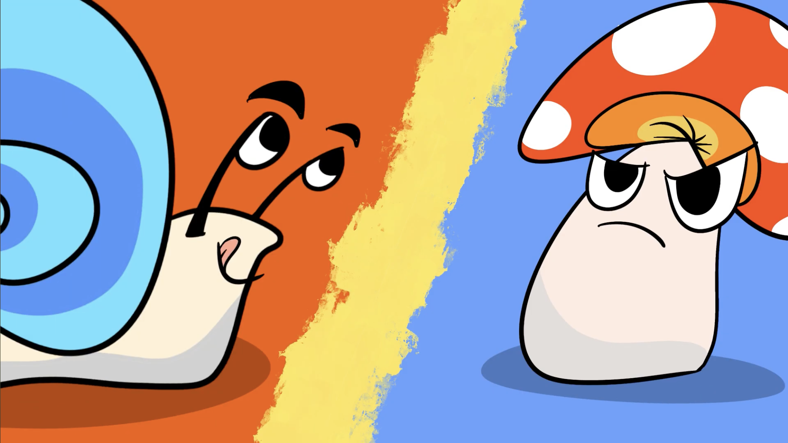
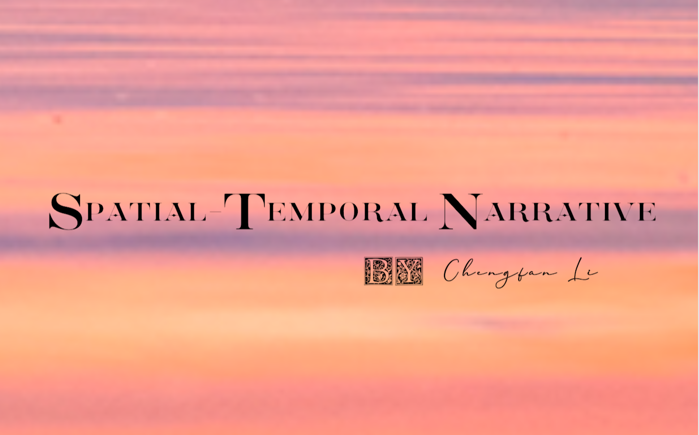
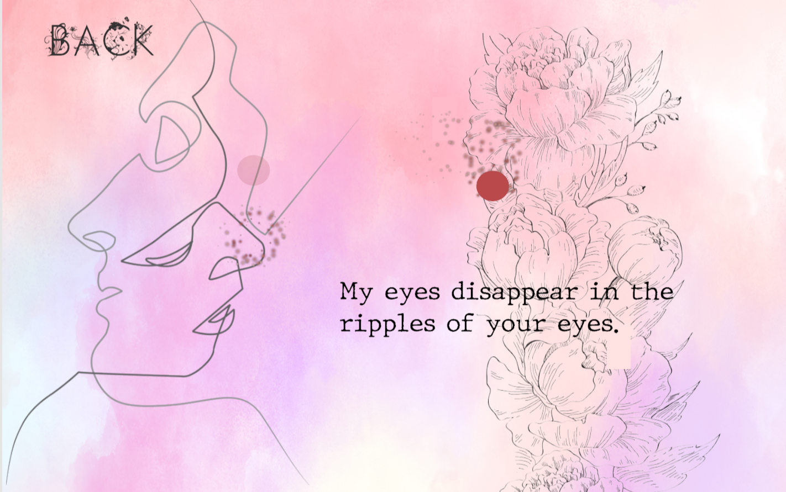

In this two-player asymmetric RTS game, players control Mushroom and Snail as two opposing species that aim to destroy each other in an enclosed natural environment with limited resources. Each side has unique abilities and tools to help it achieve dominance over the other.
This game was jointly developed by Xiaoyu Liu, Yanmei Wang, Yushi She, and me. I implemented buildings, the spit skill, the growth algorithm, the vitality system, and the skill selection mechanism.
Trailer

Welcome to Spatial-Temporal Narrative, the puzzle game where you can manipulate time and space to complete beautiful and intricate levels. As the player, you'll embark on a journey through different worlds, solving challenging puzzles by navigating through mazes without repeating your path. But you're not alone in this adventure: you have the power of time travel and space teleportation at your fingertips to help you overcome obstacles and reach the end of each level.
I developed the whole game.


Reproduced the dungeon level of "Legend of Zelda", while retaining its exciting story, fantastic background, and interesting puzzles, some hidden mechanisms have been added for players to explore.
This game was jointly developed by Yushi She, and me. I developed the transition system, enemies, and the music puzzle.